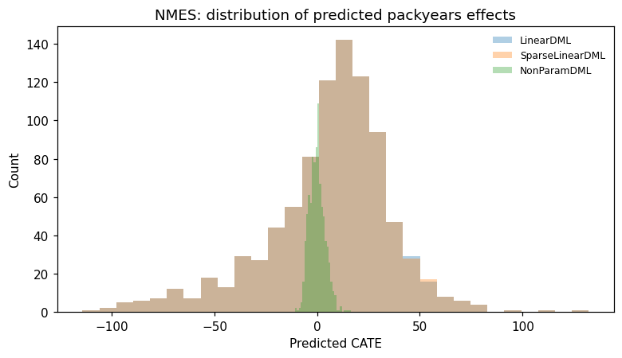
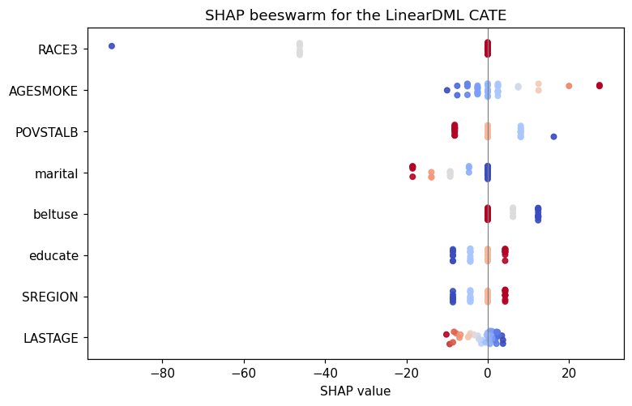
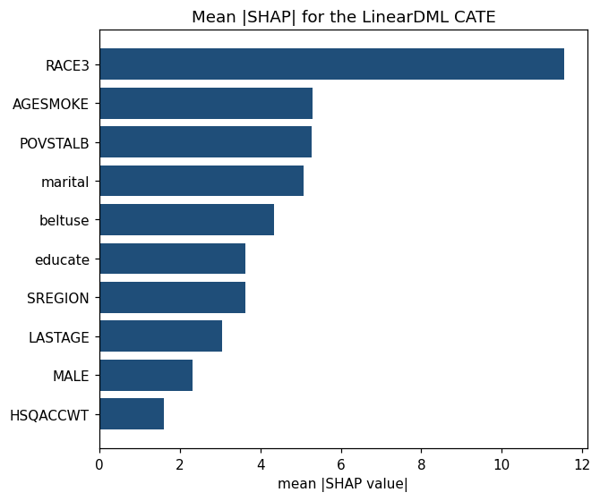
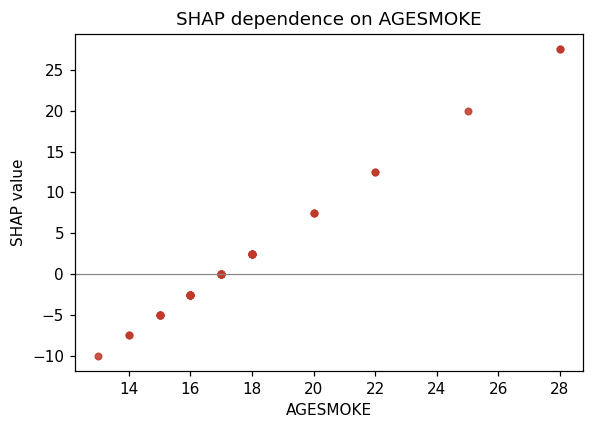
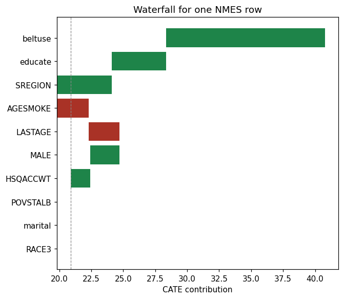
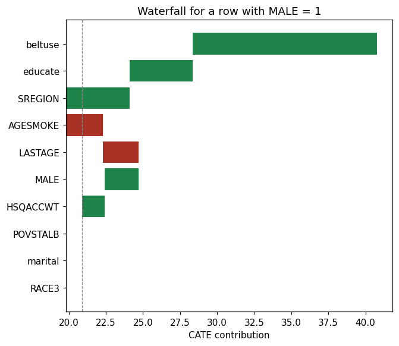

Double Machine Learning (DML) fits outcome and treatment with flexible ML, then regresses outcome residuals on treatment residuals to estimate the conditional average treatment effect (CATE). PyCausalML provides:
LinearDML: ordinary least squares final stage for heterogeneous treatment effects.
SparseLinearDML: Lasso final stage (for a high-dimensional set of effect modifiers).
NonParamDML: a flexible final stage on the R-learner pseudo-outcome.
CausalForestDML: a random forest on the doubly robust pseudo-outcome for a binary treatment.
KernelDML: a random-Fourier approximation of a kernel CATE for a binary treatment.
This notebook follows the structure of the EconML DML examples. Section 6 applies the same estimators to the NMES sample in Data/nmes_data.csv.
Overview
LinearDML, SparseLinearDML, and NonParamDML / CausalForestDML are variants of DML for heterogeneous treatment effects: \(\theta(X)\) may vary across individuals, rather than being a single constant \(\theta_0\).
The shared backbone is the same: residualize \(Y\) and \(D\) with ML nuisance models, then estimate the treatment effect from the residuals. What differs is how the final stage models \(\theta(X)\).
The shared setup
\[Y = \theta(X) \cdot D + g_0(X) + \varepsilon\]
After partialling out nuisances:
\[\tilde{Y} = Y - \hat{\ell}(X), \qquad \tilde{D} = D - \hat{m}(X)\]
\(\theta(X) = \beta_0 + \beta_1 Z_1 + \beta_2 Z_2 + \cdots\). The final stage is OLS of \(\tilde{Y}\) on \(\tilde{D}\) interacted with the effect modifiers. Use it when you want interpretable coefficients and can defend a linear specification.
SparseLinearDML
The same linear CATE, with an L1 penalty, when many candidate modifiers are zero. Use it when the modifier list is long.
NonParamDML and CausalForestDML
The final stage is a flexible regression of the orthogonal pseudo-outcome. CausalForestDML is the binary-treatment version whose final stage is a random forest. NonParamDML accepts a continuous treatment.
Implementation in Python
The sections below use PyCausalML for a single continuous treatment, a single binary treatment, polynomial features, observational NMES data, and two continuous treatments at once.
Contents
Single continuous treatment (synthetic) and model selection
Single binary treatment (synthetic) and ATE inference
Single continuous treatment with polynomial features
Single continuous treatment on NMES
Multiple continuous treatments on NMES
Use case: compare LinearDML, SparseLinearDML, and NonParamDML on NMES, with SHAP
Set Up
Code
import subprocessimport sysfrom pathlib import Pathdef _repo_root() -> Path: here = Path.cwd().resolve()for cand in [here, *here.parents]:if (cand /"pyproject.toml").is_file() and (cand /"src"/"pycausalml").is_dir():return candraiseFileNotFoundError("PyCausalML repository was not found. Run this notebook from the repository." )root = _repo_root()data_dir = root /"Data"ifnot data_dir.is_dir():raiseFileNotFoundError("The Data directory was not found. It should sit next to pyproject.toml." )try:import pycausalml # noqa: F401print("PyCausalML ready.")exceptImportError: subprocess.check_call( [sys.executable, "-m", "pip", "install", "-q", "-e", f"{root}[plot]"], )print("PyCausalML installed.")print("Data directory:", data_dir)
PyCausalML ready.
Data directory: /home/zia207/Github/PyCausalML/Data
with \(\theta(x) = \exp(2 x_1)\). Confounders \(W\) and the effect modifier \(X\) are independent. The treatment stays continuous; LinearDML(..., discrete_treatment=False) residualizes it with a regression nuisance.
We compare LinearDML, SparseLinearDML on a degree-3 polynomial of \(x_1\) plus \(W\), SparseLinearDML on a degree-6 polynomial, and NonParamDML with a random-forest final stage.
Pointwise intervals are not part of these estimators. The plot shows the CATE along \(x_1\). The table is the average effect, with the influence-function interval from each model, next to the mean of the true CATE on the test sample.
rows = []for name, model in [("LinearDML", lin_b), ("CausalForestDML", cf_b), ("InteractiveRegressionDML", irm_b), ("KernelDML", ker_b)]: summary = model.average_treatment_effect() rows.append({"Model": name, **{k: round(float(summary[k]), 3) for k in summary}})rows.append({"Model": "True mean CATE (test)", "estimate": round(float(thetab[hold_b].mean()), 3)})pd.DataFrame(rows)
Model
estimate
std.err
ci_lower
ci_upper
0
LinearDML
3.048
0.069
2.913
3.182
1
CausalForestDML
3.140
0.079
NaN
NaN
2
InteractiveRegressionDML
3.130
0.079
2.976
3.284
3
KernelDML
3.079
0.081
NaN
NaN
4
True mean CATE (test)
3.144
NaN
NaN
NaN
3. Single Continuous Treatment with Polynomial Features
Section 1 already fit three linear final stages. Here \(\hat{\theta}(z) = \hat{\beta}_0 + z^\top \hat{\beta}\), where \(z\) is a row of the design passed to fit. intercept_ is \(\hat{\beta}_0\) and feature_coef_ is \(\hat{\beta}\).
3.2 Worked example: CATE from coefficients vs predict
For LinearDML the reconstruction \(\hat{\beta}_0 + z^\top\hat{\beta}\) matches predict. For SparseLinearDML the same identity holds: the Lasso is fit without an extra intercept on top of the column of ones inside the residual design.
LinearDML max |reconstructed - predict|: 0.0
SparseLinearDML max |reconstructed - predict|: 0.0
4. Single Continuous Treatment (Observational Data)
The observational example uses the 1987 National Medical Expenditure Survey extract in Data/nmes_data.csv. The outcome is TOTALEXP and the continuous treatment is packyears. The remaining columns are covariates.
Code
nmes = pd.read_csv(data_dir /"nmes_data.csv").dropna().reset_index(drop=True)iflen(nmes) >3000: nmes = nmes.sample(3000, random_state=21).reset_index(drop=True)y_nmes = nmes["TOTALEXP"].to_numpy(dtype=float)t_pack = nmes["packyears"].to_numpy(dtype=float)x_nmes_cols = [c for c in nmes.columns if c notin {"TOTALEXP", "packyears"}]X_nmes = nmes[x_nmes_cols].to_numpy(dtype=float)lin_nmes = LinearDML(discrete_treatment=False, n_splits=2, model_y="ridge", random_state=4)lin_nmes.fit(X_nmes, t_pack, y_nmes, feature_names=x_nmes_cols)print(nmes.shape)print(lin_nmes.average_treatment_effect())
Two continuous exposures, packyears and AGESMOKE, enter a joint residual-on-residual regression. Cross-fitted residuals of \(Y\) are regressed on the cross-fitted residuals of both treatments, which is the constant-effect version of a multi-treatment final stage. Each column also gets its own LinearDML so the marginal CATE can vary with \(X\).
Outcome TOTALEXP, continuous treatment packyears, covariates as in Section 4. We compare LinearDML, SparseLinearDML, and NonParamDML, then the binary high-versus-low dose version with CausalForestDML. Metrics: the average effect and its interval, Spearman agreement of \(\hat{\theta}(X)\), and holdout RMSE of a refit outcome nuisance. SHAP attributes the LinearDML CATE to covariates.
cate = {name: model.predict(X_nmes[te_n]) for name, model in models.items()}pairs = []names =list(cate)for i, a inenumerate(names):for b in names[i +1:]: rho = stats.spearmanr(cate[a], cate[b]).statistic pairs.append({"Pair": f"{a} vs {b}", "Spearman": round(float(rho), 3)})pd.DataFrame(pairs)
Pair
Spearman
0
LinearDML vs SparseLinearDML
1.000
1
LinearDML vs NonParamDML
-0.012
2
SparseLinearDML vs NonParamDML
-0.012
6.5 Holdout RMSE of Outcome Nuisance
A standalone random forest is fit on the training split and scored on the held-out 30%. This checks \(\hat{E}[Y \mid X]\) independently of the DML final stage.
fig, ax = plt.subplots(figsize=(7.2, 4.2))for name, values in cate.items(): ax.hist(values, bins=30, alpha=0.35, label=name)ax.set_xlabel("Predicted CATE")ax.set_ylabel("Count")ax.set_title("NMES: distribution of predicted packyears effects")ax.legend(frameon=False, fontsize=8)fig.tight_layout()

6.7 SHAP for Predicted CATE
explain_cate computes permutation SHAP for the LinearDML surface. Values are contributions to \(\hat{\theta}(X)\), not to the scalar ATE.
Code
explanation = explain_cate( models["LinearDML"], X_nmes[te_n], feature_names=x_nmes_cols, max_samples=40, n_permutations=6, random_state=14,)plot_beeswarm(explanation, "SHAP beeswarm for the LinearDML CATE")

Beeswarm and bar importance
Code
explanation.plot_importance(title="Mean |SHAP| for the LinearDML CATE")

SHAP dependence plots
Code
explanation.plot_dependence(x_nmes_cols[0], title=f"SHAP dependence on {x_nmes_cols[0]}")

SHAP for a single prediction
Code
explanation.plot_waterfall(row=0, title="Waterfall for one NMES row")

Subgroup-specific SHAP
Code
if"MALE"in explanation.feature_names: column = explanation.feature_names.index("MALE") hits = np.flatnonzero(np.asarray(explanation.data[:, column]) ==1) male_idx =int(hits[0]) iflen(hits) else0else: male_idx =0explanation.plot_waterfall(row=male_idx, title="Waterfall for a row with MALE = 1")

Summary and Conclusions
This notebook uses PyCausalML to estimate heterogeneous treatment effects for continuous and binary treatments, on synthetic data and on the NMES extract.
Section 1. Continuous treatment. LinearDML, polynomial SparseLinearDML, and NonParamDML, selected by test-set CATE MSE.
Section 2. Binary treatment. CATE curves and average effects with influence-function intervals, including CausalForestDML, KernelDML, and InteractiveRegressionDML.
Section 3.intercept_ and feature_coef_ rebuild predict.
Sections 4 and 5. NMES. One continuous exposure, then a joint residual regression for two exposures.
Section 6. The same NMES sample, with agreement across final stages and SHAP on LinearDML.
Resources
Chernozhukov, V., et al. (2018). Double/debiased machine learning for treatment and structural parameters. The Econometrics Journal, 21(1), C1–C68.
Battocchi, K., et al. EconML: a Python package for ML-based heterogeneous treatment effect estimation.
The NMES extract is Data/nmes_data.csv (1987 National Medical Expenditure Survey).
Lundberg, S. M., & Lee, S.-I. (2017). A unified approach to interpreting model predictions. NeurIPS.